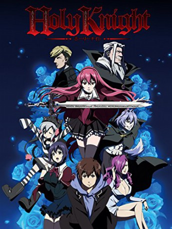

#7653 Holy Knight
 
 IMDB-Wertung: 5.9 / 10
IMDB-Wertung: 5.9 / 10  Metascore: 0
Metascore: 0 
Shinta is a student at an elite university in Tokyo, leading an ordinary and peaceful life. One day he meets Lilith, a beautiful girl from Romania who has just transferred to the school. This encounter changes Shinta's life, as he soon finds out that he is the last in a long line of vampire slayers; and Lilith is, in fact, a vampire--his eternal foe! In order for Lilith to live on, she must conceive a child with the slayer, and then kill them both and bathe in their blood. Faced with their inevitable destiny, what does the future hold?
Jahr: 2012
Dauer: 54 Minuten
FSK: 16
Land: Japan Studio: Media BlastersTonspuren:
Untertitel: Deutsch,
Auflösung: 1080p (1920x1080) Größe: 1054 MB
Genre: Thriller, Drama, Fantasy, Animation/Trick, Liebe
Regisseur: Jirô Fujimoto
Drehbuch: Matt Alan
Soundtrack:
Darsteller:
- Amber Lee Connors als Lilith Kishimoto
- Daren Donofrio als Mayall / Additional voices
 Michele Knotz als Akira Sakamoto / Lilith's Mother
Michele Knotz als Akira Sakamoto / Lilith's Mother Mike Pollock als Lilith's Father
Mike Pollock als Lilith's Father- Devon Talbott als Plum
- Harriet Weaver als Additional voices
- Melanie Ehrlich als Chizuru
- Miranda Gauvin als Camilla
- Meli Grant als Shigeyuki Yanagida / Additional voices
- Brittany Lauda als Cammot
- Daman Mills als Shinta Mizumura
- Greg Nugent als Daisuke Kimura
- Anthony Sardinha als Exercise Guy
- Matt Shipman als Additional voices
- Alex Simeone als Additional voices
- Corinne Sudberg als Maid / Additional voices
- Maaya Uchida als Lilith Kishimoto
- Michael A. Zekas als Cliff
Datei: X:\HD-Anime-Collections\Holy Knight\Holy Knight (2012, FSK16, 1920x1080) OVA1.mkv seit 29.11.2017
Festplatte: Gemischt-01+Anime
 Alle Filme aus Gruppe 'HD-Anime-Collections\Holy Knight'
Alle Filme aus Gruppe 'HD-Anime-Collections\Holy Knight'
- Holy Knight (der aktuelle Film)